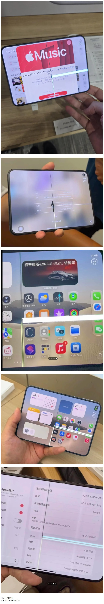

응 다 삼성탓임
듀오 반응 좋을 때: 디스플레이 전부 애플에서 설계한 거고 삼성은 외주 생산만 한 거임!! 애플이 다 만든 거다!!
듀오 반응 좆박을 때: 디스플레이 삼성에서 만든 거잖아? 삼성 주가 꼬라 박겠네 ㅉㅉ
걍 무적임. 애플은 절대 패배하지 않음.
https://quasarzone.com/bbs/qn_mobile/views/356908
팩트는 디스플레이는 삼성이 납품했지만 힌지는 애플이 설계하고 만듬

응 다 삼성탓임
듀오 반응 좋을 때: 디스플레이 전부 애플에서 설계한 거고 삼성은 외주 생산만 한 거임!! 애플이 다 만든 거다!!
듀오 반응 좆박을 때: 디스플레이 삼성에서 만든 거잖아? 삼성 주가 꼬라 박겠네 ㅉㅉ
걍 무적임. 애플은 절대 패배하지 않음.
https://quasarzone.com/bbs/qn_mobile/views/356908
팩트는 디스플레이는 삼성이 납품했지만 힌지는 애플이 설계하고 만듬
샤오미도하는걸...
같은 삼성 디스플레이를 쓴 갤폴드8은 문제없는데, 듀오는 아무튼 삼성 잘못입니다. 아무튼 그렇습니다.
그치 폴더블이 하루아침에 만들어질리가없지 ㅋㅋㅋㅋㅋ
통쾌한 제품인데 망할일이 뭐가 있겠느냐
저건 힌지 찐빠 아니냐
야쾌하네요~
애플 사용자가 꼭 지켜야 하는 규칙이 있는데
1.처음 나온건 사지마라
2.업데이트 뜨면 바로 하지마라
앱등이로써 하는말 ㅋ
똑똑한 청년
이거 ㄹㅇ임ㅋㅋ
애플워치 울트라조차 1세대는 업데이트 배제당함 ㅠ
2번 안지키면 as불가한 벽돌될수도있다며 ㅋㅋ
사실 애플뿐만이 아니라 모든 제조업체 상품에 해당하는 말일듯...자동차도 보통 풀체인지되면 1년차 첫모델은 피하라고 하잖음
통쾌했어요
딱 힌지에 크랙 나는거더라 설계 찐빠 날 수 있는데
검수를 어떻게 한거임???
이젠 안당한다~
AI로 만들었다는게 설계 말하는건가

사실상 폴드7보다 못하네